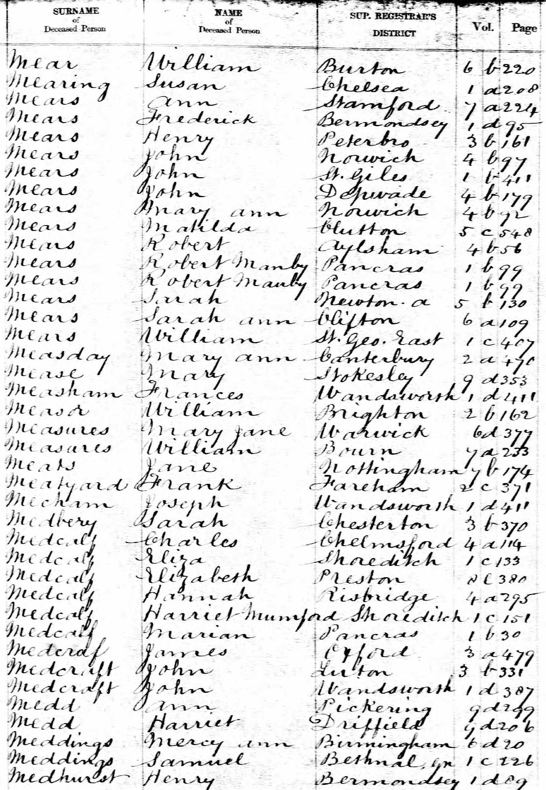
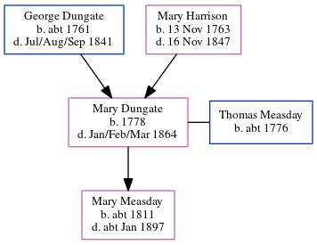

Mary Measday (née Dungate) 1778 - 1864
[ Home ] | [ Calendar ] | [ Surnames Index ] | [ Errors ] | [ Family History ]The child of George Dungate and Mary Harrison, Mary Dungate, the 4 times great-grandmother of Nigel Horne, was born in Adisham, Kent, England in 1778 and married Thomas Measday (with whom she had 1 child, Mary) in Adisham on 13 May 17992.
She died in Jan/Feb/Mar 1864 in Canterbury, Kent, England1.
Parents
- George was born c. 1761
- Mary was born on 13 Nov 1763
Children
- Mary was born c. 1811
Citations
- England & Wales, FreeBMD Death Index: 1837-1915 Online publication - Provo, UT, USA: The Generations Network, Inc., 2006.Original data - General Register Office. England and Wales Civil Registration Indexes. London, England: General Register Office. © Crown copyright. Published by permission of the Cont
- Familysearch.org (www.familysearch.org)
Media
Children of George Dungate and Mary Harrison

Mary Harrison - death index

Family Tree
Map
Generated by ged2site. Last updated on Jul 3, 2024
Known Issues
Birth date (1778) has no citations